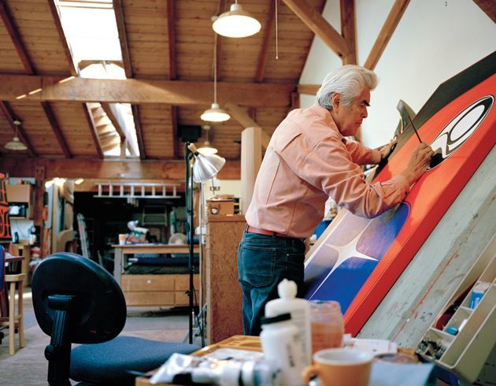
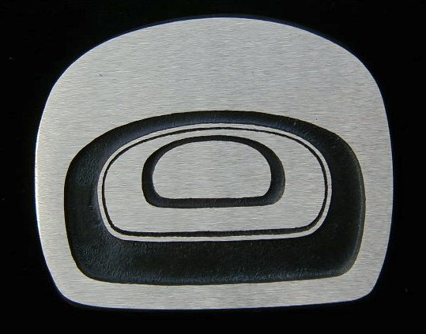

Elements of the Art
Here you will find some common elements found in the art style's around the Pacific Northwest

-
Ovoid
- Ovoids are one of the most common shapes in Northwestern Coast art. The shape resembles a rectangle with radius corners, with 3 sides concave and one convex. Ovoids can contain within them concentric ovoids to make a more elloborate desingns, or other shapes to act as a container. Ovoids are typically used as structures to the subject, sometimes as body parts and appendages. This can include palms, heads, or even eyes. See below examples for use in eyes.
-
Eyes
- Eyes can come in a variety of forms. As previously mentioned, this can be in some form of an ovoid. However, this isn't mutualy exclusive. Some eye styles will make use of simple circles, or slim ovals to represent slits of the iris iris. In more eloborate designs, some eyes may even contain images within themselves, such as a whole head of an animal!
-
Nature
- The subject matter of First Nations art is that of nature. More specifically, the art tends to feature the local animals seen in the Pacific Northwest. This tends to reflects the many cultures' beliefs that show affinity to their local enviroment and ecosystem. This would include creatures of the land (i.e Wolves, Bears), sea(Fish, Whales), and air (Eagles, Birds). In addition, the art will feature mythological creatures, such as the Thunderbird and sea serpents, that are prominent in their local lore and legends.
Color Choice
- The predominence of the colors Red, Black, White, and occasionaly Teal/Cyan, reflect the resources Natives used to create the needed pigments to paint their designs. The Natives relied on natrual products such as charcoal to create black pigments, and red berries for red pigment. It was only much later as modern paint products became widely available that artists were able to be more creative with their choices of color shading. While modern designs tend to be more liberal on the use of colors and styling, there is still a strong rooted use of the 4 basic colors that dominate the art.